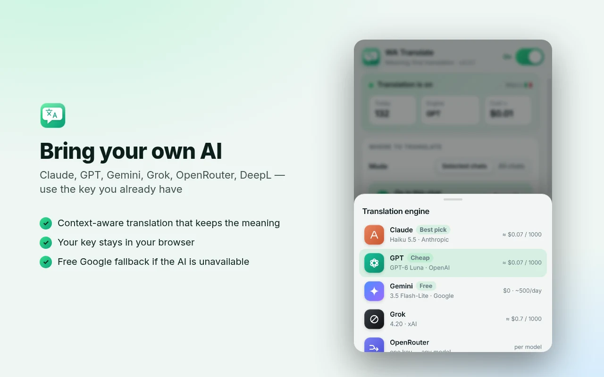
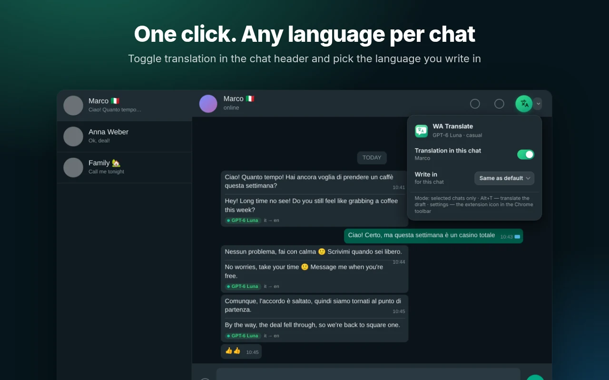

WA Translate – AI translator for WhatsApp Web
Talk with anyone in any language. Incoming messages are translated under the original, your replies are translated before they are sent — with your own AI, and only in the chats you choose.

Everything you need to chat across languages
Designed to stay out of your way: it works only where you want it and shows you exactly what will be sent.
Translation that keeps the meaning
AI engines see the recent conversation, so slang, tone, idioms and names are handled like a human would — not word by word.
Incoming, translated in place
The translation appears under each message with a small badge showing the engine and languages. Original stays visible.
Replies, checked before sending
Write in your language, press Enter, review the translation in a preview card, then send, edit or cancel. Instant-send mode is optional.
Only in the chats you choose
Off by default. Turn it on per chat with one click, each with its own reply language. In other chats it does nothing at all.
Bring your own key
Use the AI account you already have. Pay the provider directly — usually a few cents per thousand messages. A free engine is included.
25 languages, auto-detect
Source language is detected automatically. Reply in a casual or business style. A free Google fallback keeps chats working if the AI is down.
Set up in three minutes
Pick an engine
Choose Claude, GPT, Gemini, Grok, OpenRouter, DeepL — or free Google — and paste your key.
Enable the chat
Open WhatsApp Web, click the translate button in the chat header and set your languages.
Just chat
Read translations under messages. Write in your language, press Enter, check the preview, send.
A closer look




Use the AI you already trust
Switch engines any time. If your AI is unavailable, an optional free fallback keeps the chat working.
Your messages, your keys, your browser
There is no WA Translate server. Nothing is collected about you.
- No account, no developer server, no analytics, no ads.
- Your API keys and settings live only in your browser.
- Text is sent only to the engine you picked, with your key, for chats you enabled.
- Access to a provider’s server is requested only when you select it.
Questions & answers
Is it free?
The extension is free. If you use an AI engine you pay your own provider for API usage (usually a few cents per thousand messages). The Google Translate engine needs no key, but its translation is more literal.
Do I need an API key?
For Claude, GPT, Gemini, Grok, OpenRouter or DeepL — yes, create a key in that provider’s console and paste it in the extension. The key is stored only in your browser. Without a key you can use the free Google engine.
Where do my messages go?
There is no developer server. Message text goes straight from your browser to the translation provider you selected, only for chats where you enabled translation. See the privacy policy for the full list.
Does it work with the WhatsApp desktop or phone app?
No — only with WhatsApp Web (web.whatsapp.com) in a Chromium-based browser such as Chrome, Edge, Brave or Opera.
Which language is the interface in?
The extension’s own interface is currently in Russian. Translation itself works between 25 languages.
Can WhatsApp change something and break it?
It can happen: WhatsApp Web changes from time to time. The extension has a Diagnostics mode that produces a report without any message text, which you can send to the developer via GitHub issues.
Is it official?
No. WA Translate is an independent project and is not affiliated with WhatsApp or Meta. It only reads the page you have open and sends a message only after you confirm it.
How do I install it before it is in the Chrome Web Store?
Download the ZIP, unzip it, open chrome://extensions, turn on Developer mode, click “Load unpacked” and choose the unzipped folder.
Start chatting in any language
Free, private and under your control.